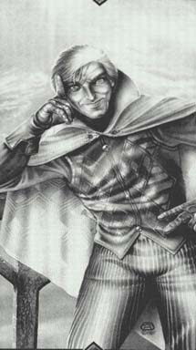

<body text="#000000" link="#0000ff" vlink="#800080" bgcolor="#ffffff">
<table cellspacing=0 border=0 cellpadding=7 width=100%>
<tr><td width="75%" valign="top">
<h3>Рэндом (Теперь король Амбера)</h3>
5'6 " 135 фунтов. Соломенные волосы, острый нос, смеющийся рот. <br>
Цвета одежды: оранжевый, красный, и коричневый. Символ - маленький набор барабанов с барабанной палочкой на них .</p>
<p align="justify">Нынешний король Янтаря был выбран Единорогом под занавес эпохи <a href="corvin.html">Корвина</a>. Рэндром создавал впечатление неустойчивого легкомысленного человека, интересовали его только женщины, вино и музыка. Флиртовавший напропалую до свадьбы с <a href="vial.html">Виалой</a>, он был в равной степени полон решимости стать первоклассным джазменом. Его не особенно волновали проблемы наследования престола и внутрисемейной драки, пока в нее не ввязался <a href="corvin.html">Корвин</a>. После чего Рэндом встал на его сторону и обеспечил значительную поддержку в победе над <a href="brand.html">Брандом</a>. В браке он абсолютно счастлив (редкий случай для Амбера), а как король он осторожен, но тверд.</td>
<td width="25%" valign="top">
<p></p>
</td></tr></table></body></html>